- 유튜브 스튜디오 각 메뉴 기능 파악하기
- 채널 설명 작성하기
- 오디오 보관함 알아두기
대시보드
대시보드는 내 채널의 현황을 한눈에 볼 수 있는 홈 화면입니다. 유튜브 스튜디오에 들어오면 가장 먼저 보이는 화면입니다.
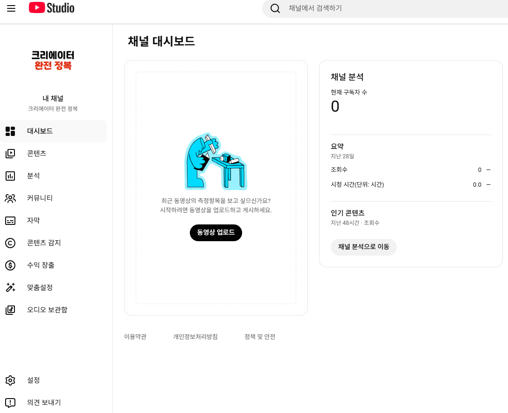
지금은 올린 영상이 없어서 비어있지만, 영상을 올리기 시작하면 아래와 같이 최신 동영상 실적, 구독자 수, 조회수, 시청 시간, 인기 콘텐츠 등을 한눈에 확인할 수 있습니다.
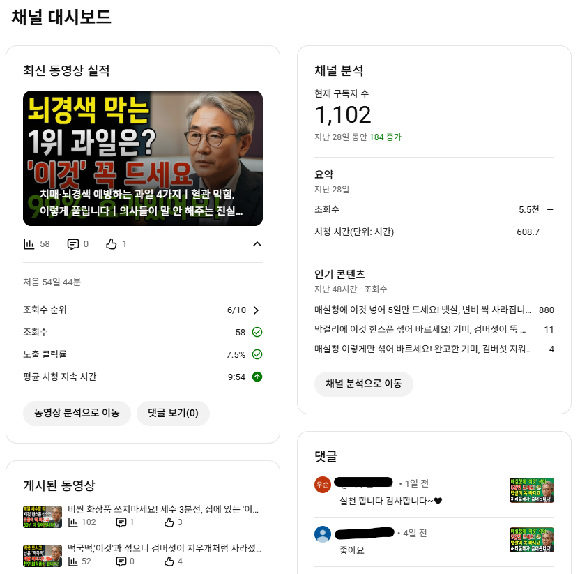
콘텐츠
내가 지금까지 올린 동영상, 쇼츠, 라이브 영상을 한눈에 볼 수 있는 곳입니다. 영상 제목, 공개 상태, 조회수, 댓글 수 등을 여기서 확인하고 수정할 수 있습니다.
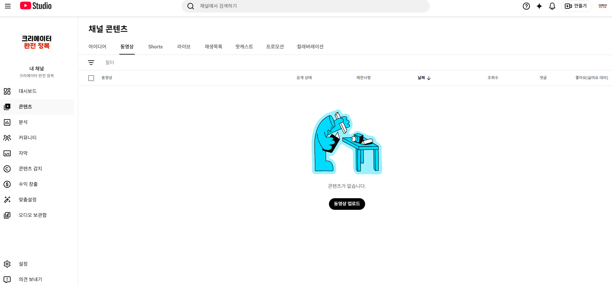
영상이 쌓이면 아래와 같이 보입니다.
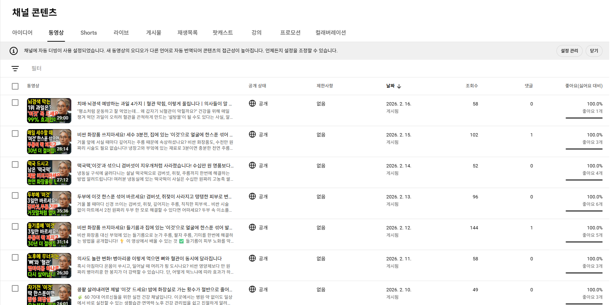
채널 분석
내 채널이 현재 어떤 상태인지 숫자로 확인할 수 있는 핵심 메뉴입니다. 조회수, 시청 시간, 구독자 변화, 시청자 유입 경로 등 채널 성장에 필요한 모든 데이터가 여기 있습니다.
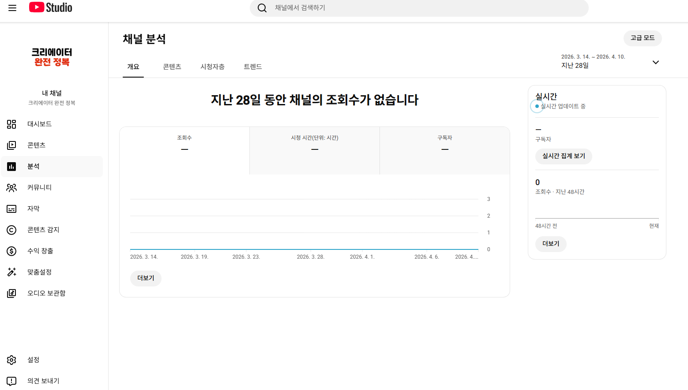
채널 분석은 유튜브에서 가장 중요한 기능 중 하나입니다. 조회수가 어디서 오는지, 어떤 영상이 잘 됐는지, 시청자가 어디서 이탈하는지 — 이 데이터를 읽을 줄 알아야 채널이 성장합니다.
하지만 영상이 없으면 분석할 것도 없습니다. 데이터가 쌓이지 않은 상태에서 분석 메뉴를 열어봐야 숫자가 없거나, 있어도 의미 있는 패턴이 보이지 않습니다.
지금은 메뉴가 이런 게 있다는 것만 알고 넘어가세요. 영상을 꾸준히 올리고, 어느 정도 데이터가 쌓였을 때 — 그때 채널 분석을 제대로 다루겠습니다.
유튜브 실전에서 자세히 보기커뮤니티
내 영상에 달린 댓글을 한눈에 볼 수 있는 공간입니다. 댓글에 답글을 달거나, 스팸 처리, 삭제도 여기서 할 수 있습니다. 지금은 영상이 없어서 비어있습니다.
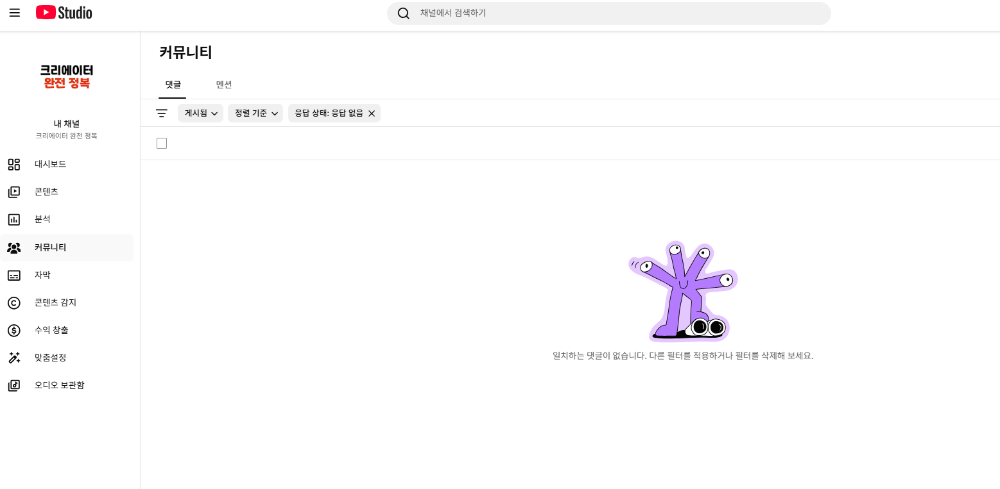
댓글이 달리기 시작하면 아래와 같이 보입니다.
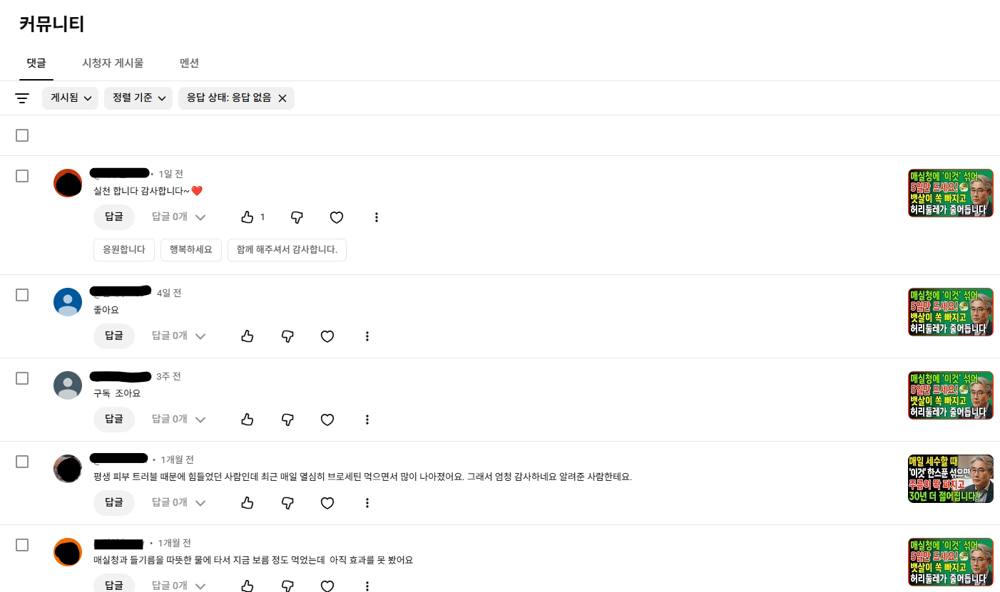
채널 자막
업로드한 영상에 자막 파일을 추가하거나 관리할 수 있는 곳입니다. 유튜브가 자동으로 생성한 자막을 수정하거나, 직접 만든 자막 파일을 올릴 수 있습니다. 처음에는 크게 신경 쓰지 않아도 됩니다.
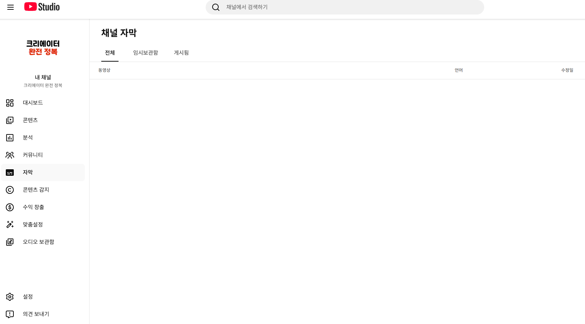
콘텐츠 감지
누군가 내 영상을 무단으로 가져다 다른 채널에 올렸다면 유튜브가 자동으로 감지해줍니다. 해당 영상의 조회수, 채널 구독자 수, 일치율, 날짜, 어떤 영상인지까지 확인할 수 있습니다. 하나하나 클릭해서 삭제 요청(신고)도 할 수 있습니다.
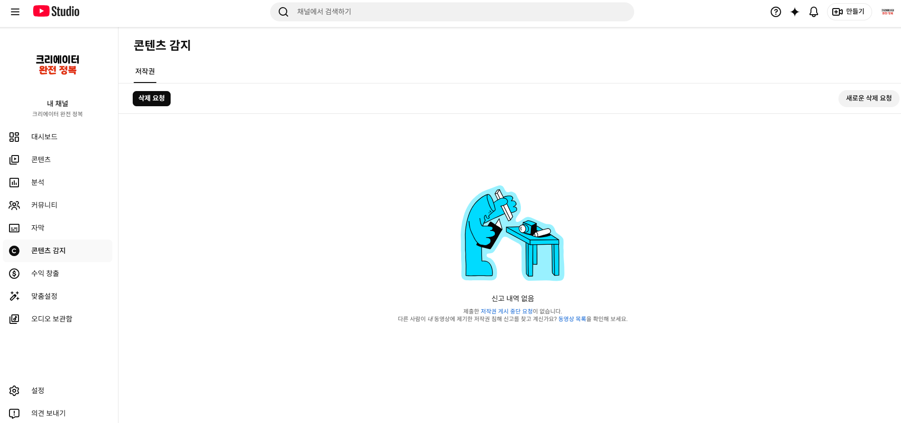
영상이 무단 복제된 기록이 있으면 아래와 같이 표시됩니다.
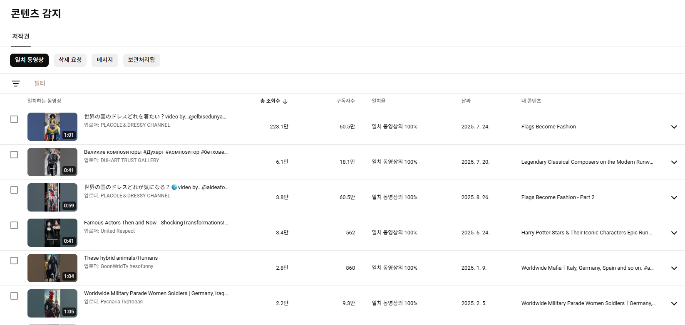
수익 창출
유튜브 광고 수익을 설정하는 곳입니다. 유튜브 영상을 보다 보면 광고가 나오는 채널이 있는데, 수익 창출 자격 요건을 충족한 채널만 광고 수익을 받을 수 있습니다.
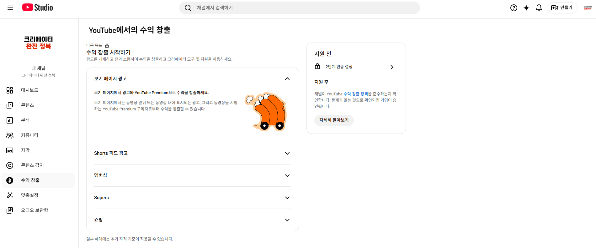
수익 창출 자격 요건은 아래와 같습니다.
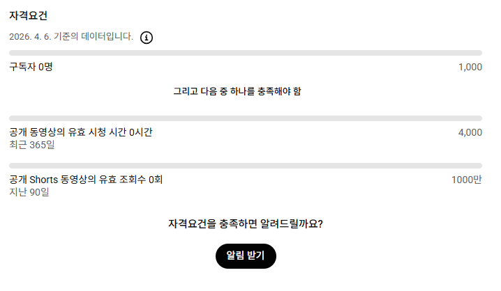
- 구독자 1,000명 이상
- 최근 1년간 총 시청 시간 4,000시간 이상
또는 최근 90일간 쇼츠 조회수 1,000만 회 이상
자격 요건이 충족되면 알림을 받을 수 있도록 알림 받기를 체크해두세요.
수익 창출 신청은 자격 요건이 채워진 다음에 하면 됩니다. 지금 당장 건드릴 메뉴가 아닙니다.
수익 창출 구조는 생각보다 복잡합니다. 광고 수익 외에도 멤버십, 슈퍼챗, 쇼핑 등 여러 수단이 있고, 어떤 조건에서 얼마를 받을 수 있는지도 채널마다 다릅니다. 지금 단계에서 전부 설명하는 건 오히려 혼란스러울 수 있습니다.
일단 영상을 올리는 데 집중하세요. 요건이 충족된 후에 아래 내용을 봐도 전혀 늦지 않습니다.
유튜브 실전에서 자세히 보기맞춤 설정
채널 사진, 배너, 채널명, 설명 등을 수정할 수 있는 곳입니다. 챕터 2~3에서 이미 채널 사진과 배너는 설정했습니다. 이번엔 채널 설명을 작성해보겠습니다.
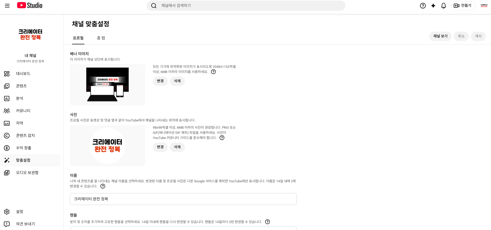
채널 설명 작성하기
설명을 작성하지 않으면 채널 홈 화면에 아무 소개도 나타나지 않습니다.
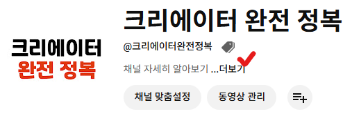
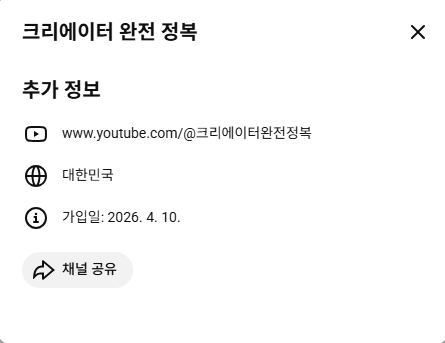
맞춤 설정 → 기본 정보에서 설명 칸에 채널 소개를 입력한 뒤 유튜브 스튜디오 오른쪽 상단의 게시를 클릭합니다. 저는 '크리에이터 완전 정복!' 이라고 입력해보겠습니다.
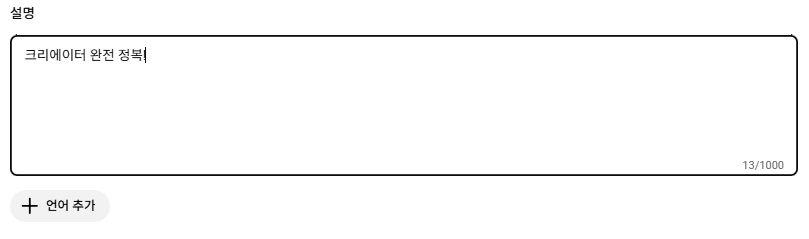
채널 보기를 눌러보면 설명글이 채워진 것을 확인할 수 있습니다.
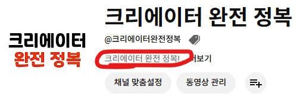
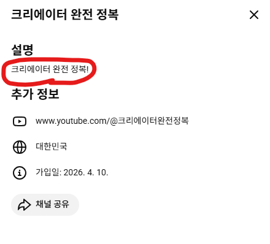
설명글이 알고리즘에 미치는 영향은 크지 않습니다. 그보다는 채널에 처음 들어온 사람이 "이 채널이 뭐 하는 곳인지" 바로 알 수 있게 해주는 역할이 더 큽니다. 짧아도 괜찮으니 채널의 방향을 한두 줄로 적어두세요. 언제든지 수정할 수 있습니다.
언어 추가
해외 사용자가 내 채널에 들어왔을 때 보여지는 채널명과 설명을 해당 언어로 따로 설정할 수 있는 기능입니다.
처음부터 해외 시청자를 타겟으로 하지 않고, 한국어로 영상을 만들 계획이라면 언어 추가는 하지 않는 것을 추천드립니다.
해외 시청자도 타겟으로 한다면 언어 추가를 클릭해 원하는 언어와 해당 언어로 된 채널명·설명을 입력하면 됩니다.
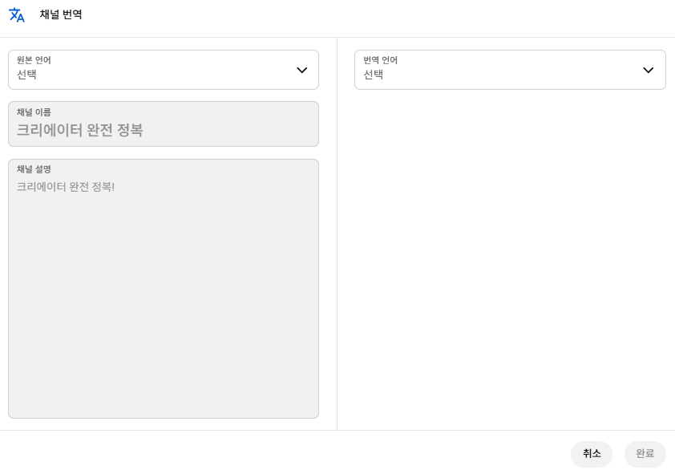
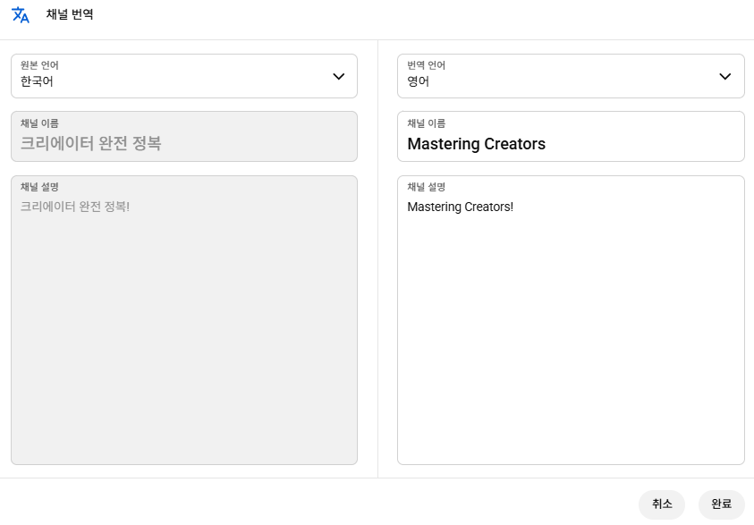
왼쪽에는 현재 채널의 원본 채널명과 설명이 표시되고, 오른쪽에는 추가할 언어로 채널명과 설명을 입력합니다. 예를 들어 영어를 추가한다면 영어로 된 채널명과 설명을 입력하면 됩니다. 저는 채널명을 'Mastering Creators'로 입력해보겠습니다. 완료를 누른 뒤 게시하면 영어권 사용자에게는 설정한 영어 채널명과 설명으로 표시됩니다.
링크 추가
인스타그램, 틱톡, 블로그 등 연결하고 싶은 외부 사이트가 있다면 링크 제목과 URL을 입력해 채널 홈 화면에 표시할 수 있습니다. 선택사항이므로 없으면 비워두어도 됩니다.
연락처 정보
이메일 주소를 입력하면 채널 홈 화면 설명 아래에 연락처로 표시됩니다. 광고나 협업 문의를 받고 싶다면 입력해두는 것이 좋습니다.
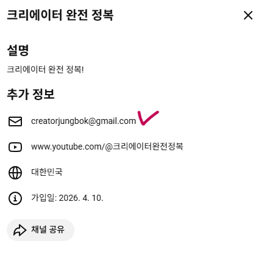
동영상 워터마크
유튜브 영상 오른쪽 하단에 표시되는 작은 로고 이미지입니다. 시청자가 이 워터마크를 클릭하면 내 채널 구독 버튼이 나타납니다. 구독을 유도하는 데 도움이 되는 기능입니다. 채널 사진 이미지를 그대로 사용하거나, 아래 이미지와 같이 미리캔버스 등으로 직접 만들어서 사용하셔도 됩니다.
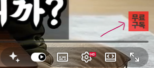
오디오 보관함
유튜브에서 저작권 걱정 없이 무료로 사용할 수 있는 음악과 효과음 모음입니다. 마음에 드는 음악이 있다면 영상 편집 시 배경음악으로 활용할 수 있습니다.
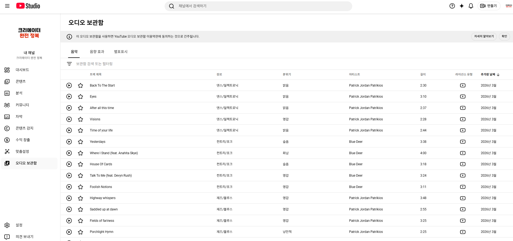
마음에 드는 음악이 있으면 오프라인 저장 버튼을 눌러 다운로드한 뒤 영상에 사용하면 됩니다.
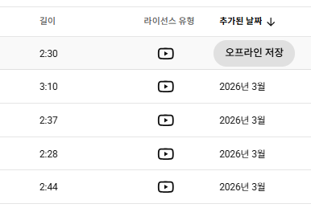
유튜브는 음악 저작권에 매우 민감합니다. 오디오 보관함에 있는 음악 외에 임의로 가져다 쓴 음악은 저작권 위반으로 영상이 차단되거나 수익이 박탈될 수 있습니다.